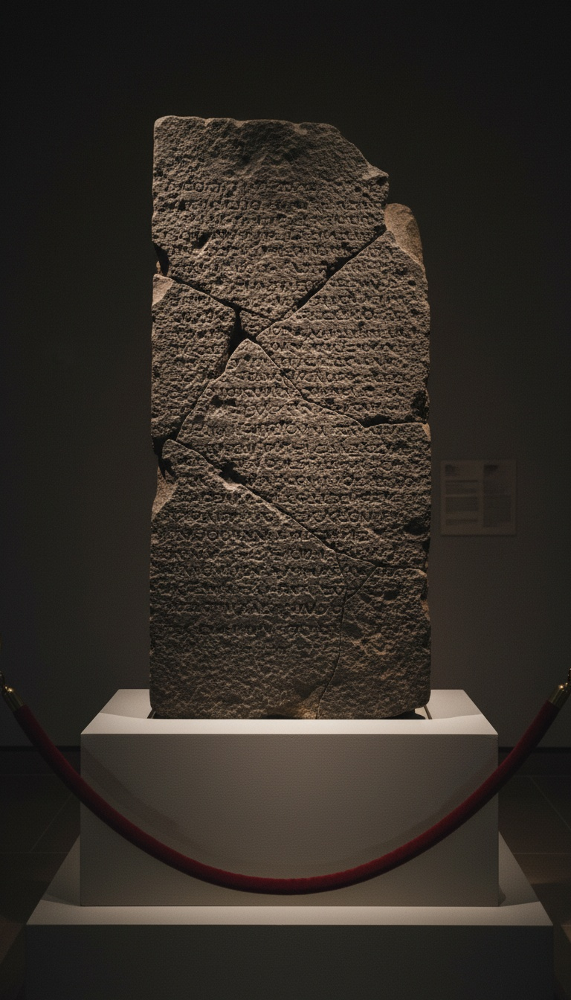

Historians spent a hundred years calling King David a legend. An enemy king carved his dynasty into black basalt stone, named his royal house in Aramaic for the whole ancient Near East to read, then deliberately smashed the evidence and buried it face-down inside a wall. The ground held that secret for twenty-eight centuries. In 1993, a dig crew at Tel Dan pulled the pieces out.
The stone did not come from a believer. It came from the man who wanted David's line dead.

The Hundred-Year Erasure Campaign
The case against David was built in universities, not in the ground. A movement of biblical minimalists, most vocal from the 1980s onward, argued that the unified monarchy of ancient Israel was theological fiction, a retrospective narrative assembled by scribes with an agenda. Philip Davies of the University of Sheffield published In Search of Ancient Israel in 1992, declaring the biblical David a literary construct with no archaeological basis. Thomas L. Thompson of the University of Copenhagen extended the argument to the entire patriarchal tradition, calling it a late Persian-period invention. Niels Peter Lemche, also at Copenhagen, agreed. Three credentialed scholars. Three institutions. One shared conclusion: no inscription, no monument, no king.
The argument had the structure of absence. David left no confirmed record outside the Hebrew scriptures. Every dig in Jerusalem and the surrounding hill country had turned up artifacts from every era except evidence of a tenth-century royal administration at the scale the Bible described. For the minimalists, silence in the ground meant fiction on the page. By 1992, the year Davies published, the position had hardened into institutional consensus in certain departments. David was a useful myth.
That consensus had one year left.
The Wall at Tel Dan, July 1993
Tel Dan sits in the Upper Galilee at the headwaters of the Jordan River, near Kibbutz Dan at the foot of Mount Hermon. Avraham Biran of the Hebrew Union College-Jewish Institute of Religion had led excavations at the site since 1966. In July 1993, a team member named Gila Cook noticed a fragment of black basalt incorporated into a wall in Area B of the dig. The stone had been built in face-down, inscribed surface pressed against the earth. Biran recognized the ancient Aramaic script when the fragment came free.
Two more fragments emerged from the same wall in 1994. The excavation team designated them B1 and B2. The three pieces fit together into a single stele. The complete inscription ran to thirteen lines of Old Aramaic, composed in the style of the ninth century BC. It was a victory monument. A king broadcasting his military achievements to anyone who passed through the gate district where it once stood in the open.
Five Letters, One Verdict
Line nine of the Tel Dan inscription carries five Aramaic characters: bet, yod, tav, dalet, vav, dalet. Bytdwd. House of David. The inscription names two kings the author claims to have killed: the king of Israel and the king of the House of David. In the political geography of the ninth century BC, House of David was the designation for the royal dynasty ruling Judah from Jerusalem. The term appears nowhere in any extra-biblical source before this stone. It appears here because an enemy king needed to name his target precisely. He was writing propaganda for his own subjects, confirming he had eliminated a specific ruling line. There was no theological motive to honor David. He named the house because the house was real enough to be worth killing.
Avraham Biran and Joseph Naveh published the initial report in the Israel Exploration Journal, Volume 43, in 1993. Epigraphers at institutions from Cambridge to Hebrew University examined the fragments. The reading of bytdwd as House of David became the consensus transliteration within months. The Tel Dan Stele now sits on permanent display in the Archaeology Wing of the Israel Museum in Jerusalem. That is where it is right now.
The man who hated David most named his dynasty in stone. The inscription is in Jerusalem right now, and it does not care what anyone decided in a Copenhagen seminar room.
Hazael's Receipts
The Tel Dan Stele is attributed to Hazael, king of Aram-Damascus, who ruled from 842 to 800 BC. Hazael does not need the Bible to establish his existence. Shalmaneser III of Assyria named him in royal annals carved on the Black Obelisk, now in the British Museum in London, calling him a son of nobody, the Akkadian insult for a usurper with no royal blood. The Kurkh Monolith, also in the British Museum, records Shalmaneser's campaigns against Hazael's predecessor in Damascus. Hazael appears in three independent record traditions: Assyrian cuneiform, Hebrew scripture, and the Old Aramaic of the Tel Dan basalt. His stele claims he killed Jehoram son of Ahab, king of Israel, and Ahaziah son of Jehoram, king of the House of David. The book of Kings records both those deaths. The stele records them from the other side of the battlefield.
That convergence is not a matter of interpretation. Two hostile parties, separated by geography and political interest, describing the same killings with the same names from opposite sides of the war. The only way to break the correlation is to dismiss both sources simultaneously, which no scholar who accepts Hazael's Assyrian documentation can do with a straight face.
The Anatomy of a Deliberate Burial
The fragments did not scatter across an open field. They were built into a wall, face-down, used as rubble fill in a construction project that postdated the original stele by decades. The Tel Dan excavation team established that the wall section holding the fragments dated to the late Iron Age. Someone retrieved the stele after it was already standing, broke it into at least three pieces, turned each piece so the inscription faced the ground, and sealed them inside load-bearing masonry. That sequence requires intent at every step.
Abandoned monuments get toppled or reused as building material with the inscription facing outward, because the stone is the value, not the text. This stone was inverted. The text was the target. Whoever buried it knew exactly what it said and made sure no one would read it again without tearing a wall apart to find it.
Every civilization erases what it fears. Rome practiced damnatio memoriae, scratching emperors off public monuments after their disgrace. Hatshepsut's cartouches were chiseled from temple walls across Egypt. Akhenaten's face was cut from his own reliefs at Karnak. None of those erasures involved burial with the inscription face-down inside masonry. The Tel Dan Stele received a treatment reserved for something worse than a fallen pharaoh. It received a burial. Engineered specifically so no one would read it again.
The Tel Dan Stele is in Jerusalem. Avraham Biran and Joseph Naveh published the discovery in the Israel Exploration Journal in 1993. The inscription has been read, translated, and cross-examined for thirty years by epigraphers on four continents. The letters are still razor-sharp in black basalt, exactly as they were when Gila Cook noticed the fragment in a wall in the Galilee in July 1993. The House of David. Carved by his enemy. Buried by someone else. Recovered by accident.
The question the stone leaves open is the one no excavation has answered: who broke it, when, and what did they know that made David's name dangerous enough to bury for twenty-eight centuries rather than leave to weather and fade in the open? Someone made that decision. Someone gathered the pieces. Someone turned each one over before sealing them in. That person knew exactly what was being destroyed and still could not finish the job. That is either a failure of erasure, or it is something else entirely. The answer is still in the ground at Tel Dan.
Before you go
7 books the Vatican doesn't want you reading. Free PDF — the texts they cut, with sources. Joined by 140+ Inner Circle members.
No spam. Unsubscribe anytime.
Go deeper
The Hidden Canon, Vol. I — Enoch. Jubilees. Thomas. Mary. Judas. 90 pages, 14 chapters, every receipt cited. The books your Bible quietly removed.
Read the Canon →Books that informed this investigation
As an Amazon Associate, Hidden Epoch earns from qualifying purchases. Cost to you: nothing.
Research safely
The VPN we use to research without being tracked. First 3 months free.
Get NordVPN →